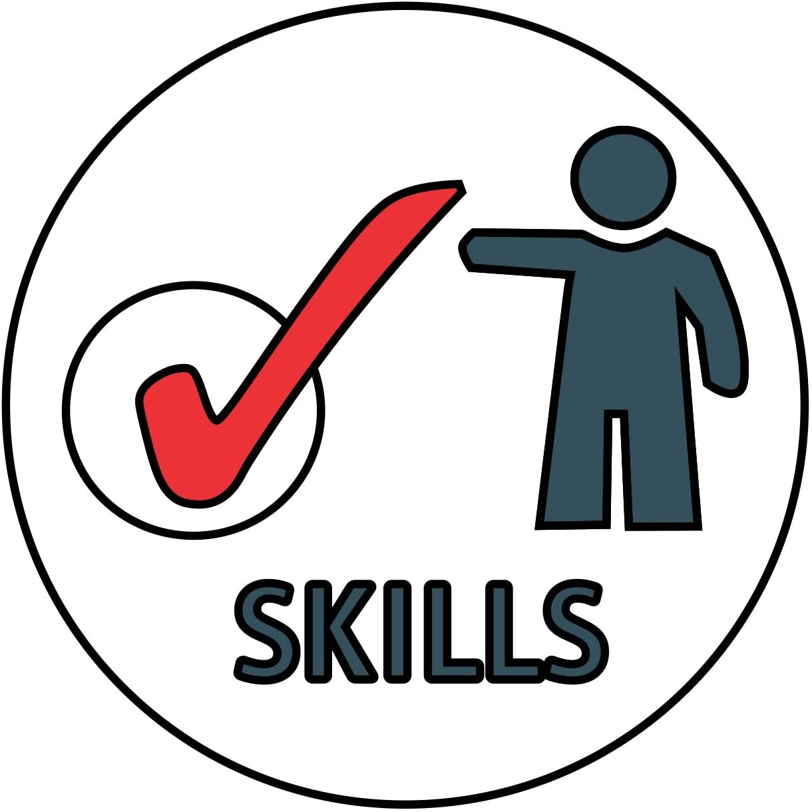

There are different kinds of animals on our planet, and all of them are very important for it. For example, everybody knows that the sharks are dangerous for p eople, but they are useful for cleaning s eawater. There are two types of animals: d omestic (or pets) and wild. People keep pet s in their homes. And some wild animals are very dangerous. Domestic animals live next to people, whereas wild animals’ “homes” are forests, jungles, oceans and so on. Giraffes are very beautiful and unusual an imals. They are the tallest land animals in the world. Giraffes can reach a height of 5,5 m and a weight of 900 kg. They are fam ous for their long necks. But does anybody know, that giraffes have a very long tongue? They even can clean the ears with it! Giraff es are usually yellow or light brown with dar k stains. Giraffes live in African savannas. They can live from 20 to 30 years. It is interesting to know, that giraffes sleep only twenty minut es at a time. They sit down on the ground and bend their long neck down.
Apartheid was a system of racial segregation enforced through legislation by the National Party (NP) governmen ts of South Africa. In this system, which lasted from 19 48 to 1994, the rights of the majority black inhabitants of South Africa were curtailed and white supremacy and A frikaner minority rule was maintained. South West Afric ans were also victims of apartheid as this country was a dministered by South Africa under a League of Nations m andate until it gained independence as Namibia in 1990. Apartheid as an official policy was introduced following the general election of 1948. New legislation classified inhabitants into four racial groups (“native”, “white”, “coloured”, and “Asian”), and residential areas were s egregated, sometimes by means of forced removals. Non-w hite political representation was completely abolished in 1970, and starting in that year black people were de prived of their citizenship. The government segregated e ducation, medical care, beaches, and other public service s, and provided black people with services inferior to th ose of white people. Apartheid sparked significant interna l resistance and violence as well as a trade embargo again st South Africa. In addition to the unrest resulting from t he internal protests, the sanctions placed on South Africa b y the West made it increasingly difficult for the governmen t to maintain the regime. In 1990 President Frederik Willem de Klerk began negotiations to end apartheid, culminating i n multi-racial democratic elections in 1994, which were won b y the African National Congress under Nelson Mandela.